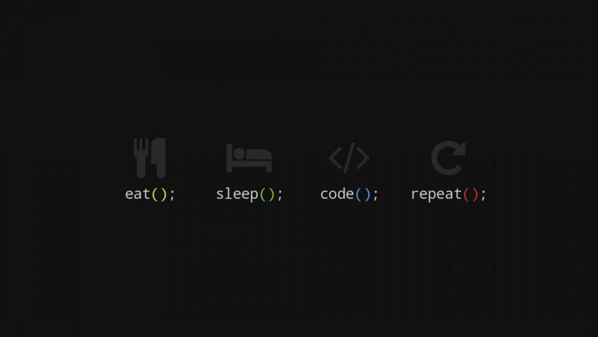
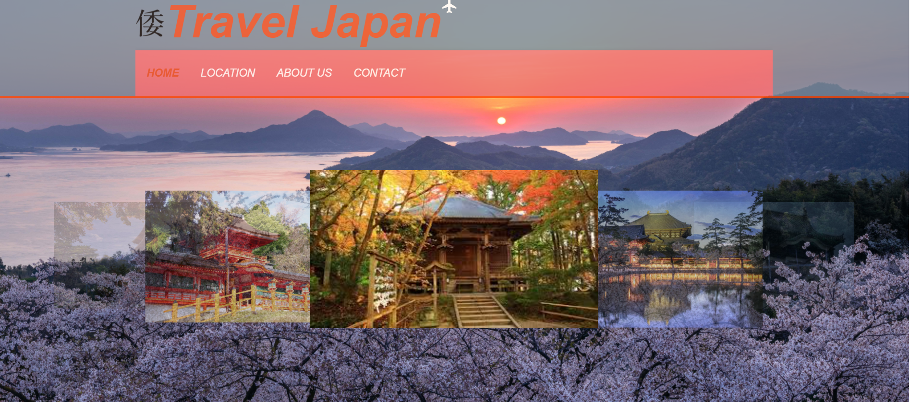
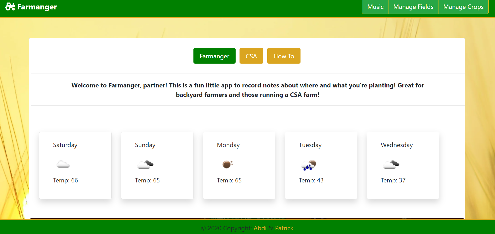

Below are some of the projects that I have enjoyed working on during the boot-camp course at the University of Minnesota. The class was grueling and challenging but I walked away with a lot of knowledge and the "bug" itself.
Thank you for visiting my page and hope you enjoy viewing my profile and work as much as I have enjoyed creating them. Feel free to check out some of my links & CV.


Travel Japan website gives users a look in to traveling to Japan during the current Covid-19 pandemic. The app allows users who are thinking of traveling to Japan to plan ahead. We used Google maps, weather and places APIs to help users plan a save trip to Japan. We divided into front-end and back-end groups. I was part of the front-end team and enjoyed implementing the carousel and parallax using materialize CSS.

Farmanger is a database app that allows users to keep track of crops and the land it is planted on. The app allows users to manage fields and crops by creating, deleting and updating each field.
My cohort Patrick and I designed and build the app using MVC paradigm on our own server-side API. Some of the languages used to build this app include MongoDb, Atlas, Express, and Node.JS.

Note Taker is an application that allows you to save notes with a title in plain text. This application uses an express backend and saves and retrieves notes data from a JSON file. As a user you are able to create, save and delete notes.